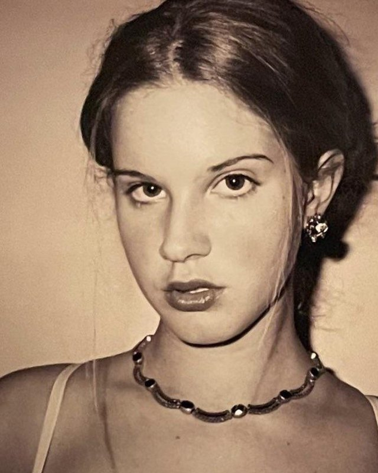

Before Lana

Early life
Elizabeth Woolridge Grant was born on June 21, 1985 in Manhattan, to Robert England Grant Jr., a copywriter at Grey Global Group, and Patricia Ann "Pat" Grant (née Hill), an account executive at the same organization. She has a younger sister, Caroline "Chuck" Grant, and a younger brother, Charlie Grant. Of Scottish and English descent, she was raised Catholic. When she was a year old, the family relocated to Lake Placid, New York, where her father worked for a furniture company before becoming an entrepreneurial domain investor, and her mother worked as a schoolteacher. During her elementary years, she attended St. Agnes School and began singing in her church choir, serving as the cantor.
She attended the high school where her mother taught for a year, but at age 14, her parents sent her to Kent School, an Episcopal boarding school in Kent, Connecticut, to address her developing alcoholism. Her uncle, an admissions officer at the school, secured her financial aid to attend. Reflecting on this period, Grant stated "That's really why I got sent to boarding school aged 14—to get sober." According to Grant, she had difficulty making friends during much of her adolescence and early adulthood. She noted preoccupied with death from a young age, which contributed to feelings of anxiety and alienation:
"When I was very young I was sort of floored by the fact that my mother and my father and everyone I knew was going to die one day, and myself too. I had a sort of a philosophical crisis. I couldn't believe that we were mortal. For some reason that knowledge sort of overshadowed my experience. I was unhappy for some time. I got into a lot of trouble. I used to drink a lot. That was a hard time in my life."
Grant later dropped out of school to go to rehab; she has been sober since 2003. She spent a year living on Long Island with her aunt and uncle and working as a waitress. Grant, also briefly worked as a model, signed to Ford. During that time, Grant's uncle taught her to play guitar and she "realized [that she] could probably write a million songs with those six chords". Shortly after, she began writing songs and performing in nightclubs around the city under various names such as "Sparkle Jump Rope Queen" and "Lizzy Grant and the Phenomena". "I was always singing, but didn't plan on pursuing it seriously", she said:
"When I got to New York City when I was eighteen, I started playing in clubs in Brooklyn—I have good friends and devoted fans on the underground scene, but we were playing for each other at that point—and that was it."
Education
She originally attended State University of New York at Geneseo, but dropped out to take a gap year. In fall 2004, at age 19, Grant enrolled at Fordham University in the Bronx, New York where she majored in philosophy with an emphasis on metaphysics. She has said she chose to study the subject because it "bridged the gap between God and science... I was interested in God and how technology could bring us closer to finding out where we came from and why."
Early career, 2005–2010
In spring 2005, while still in college, Del Rey registered a seven-track extended play with the United States Copyright Office; the application title was Rock Me Stable with another title, Like Me , also listed. A second extended play, From the End, was also recorded under Del Rey's stage name at the time, May Jailer. Between 2005 and 2006 she recorded an acoustic album, Sirens, under the May Jailer project, which leaked on the internet in mid-2012.
At her first public performance in 2006 in the Williamsburg Live Songwriting Competition, Del Rey met Van Wilson, an A&R representative for 5 Points Records, an independent label owned by David Nichtern. In 2007, while a senior at Fordham, she submitted a demo tape of acoustic tracks, No Kung Fu, to 5 Points, which offered her a recording contract for $10,000. She used the money to move to Manhattan Mobile Home Park, a trailer park in North Bergen, New Jersey and began working with producer David Kahne. Nichtern recalled: "Our plan was to get it all organized and have a record to go and she'd be touring right after she graduated from college. Like a lot of artists, she morphed. When she first came to us, she was playing plunky little acoustic guitar, [had] sort of straight blonde hair, very cute young woman. A little bit dark, but very intelligent. We heard that. But she very quickly kept evolving."
Del Rey graduated from Fordham with a Bachelor of Arts degree in philosophy in 2008 after which she released a three-track EP, Kill Kill, as Lizzy Grant, featuring production by Kahne. She explained: "David asked to work with me only a day after he got my demo. He is known as a producer with a lot of integrity and who had an interest in making music that wasn't just pop." Meanwhile, Del Rey was doing community outreach work for homeless individuals and drug addicts; she had become interested in community service work in college, when she "took a road trip across the country to paint and rebuild houses on a Native American reservation".
Of choosing a stage name for her feature debut album, she said: "I wanted a name I could shape the music towards. I was going to Miami quite a lot at the time, speaking a lot of Spanish with my friends from Cuba—Lana Del Rey reminded us of the glamour of the seaside. It sounded gorgeous coming off the tip of the tongue." The name was also inspired by actress Lana Turner and the Ford Del Rey sedan, produced and sold in Brazil in the 1980s. Initially she used the alternate spelling Lana Del Ray, the name under which her self-titled debut album was released in January 2010. Her father helped with the marketing of the album, which was available for purchase on iTunes for a brief period before being withdrawn in April 2010. Kahne and Nichtern said that Del Rey bought the rights back from 5 Points, as she wanted it out of circulation to "stifle future opportunities to distribute it—an echo of rumors the action was part of a calculated strategy". She met her managers, Ben Mawson and Ed Millett, three months after Lana Del Ray was released, and they helped her get out of her contract with 5 Points Records, where, in her opinion, "nothing was happening". Shortly after, she moved to London, and moved in with Mawson "for a few years". On September 1, 2010, Del Rey was featured by Mando Diao in its MTV Unplugged concert at Union Film-Studios in Berlin, Germany. Also in 2010, she acted in a short film, Poolside, which she made with several friends.